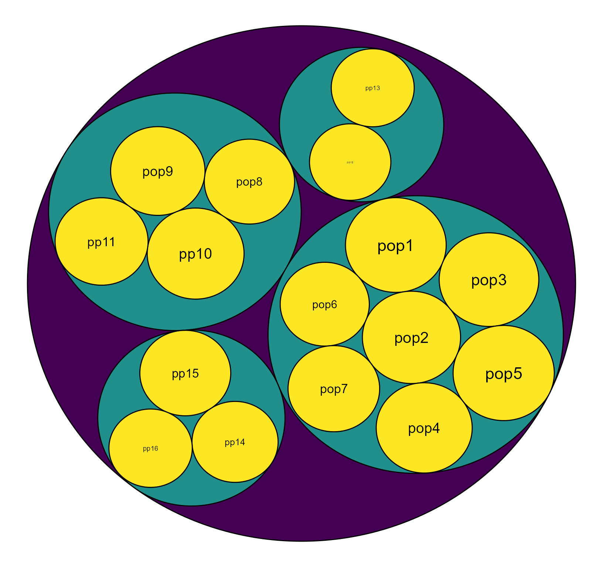
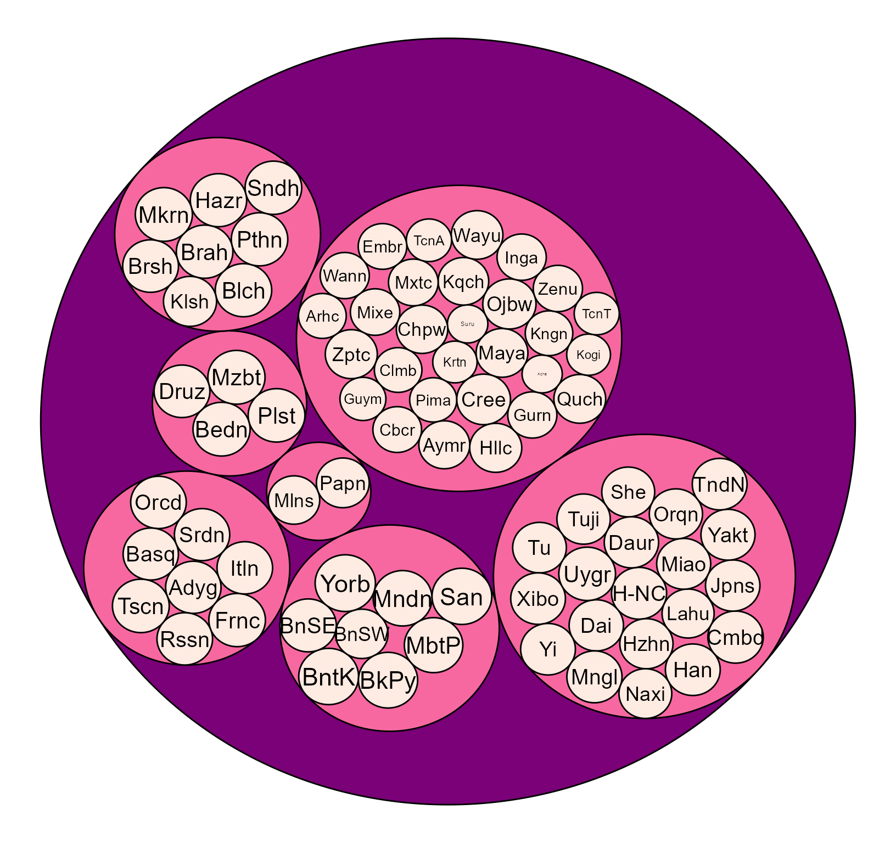
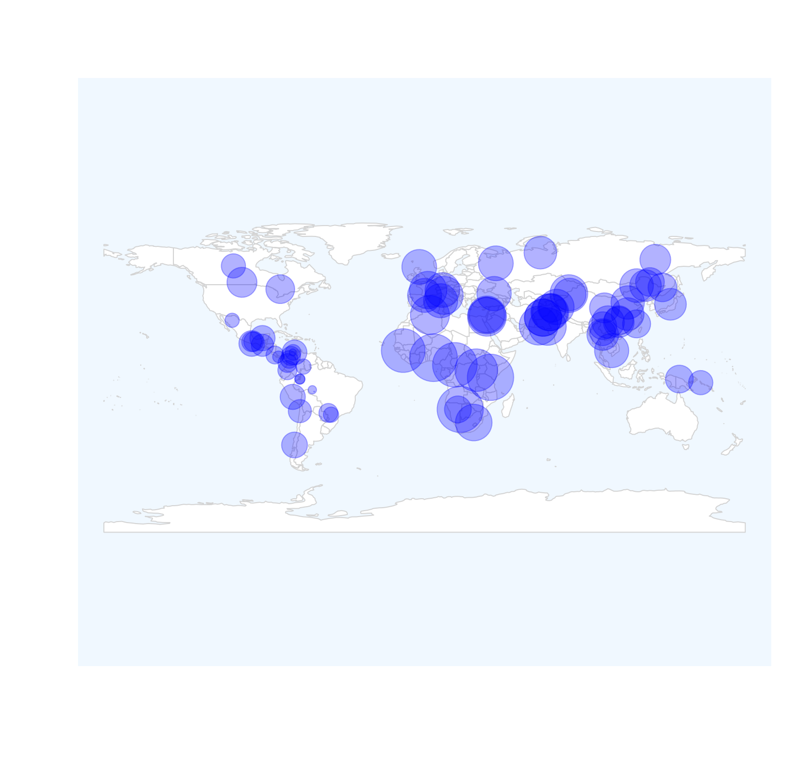
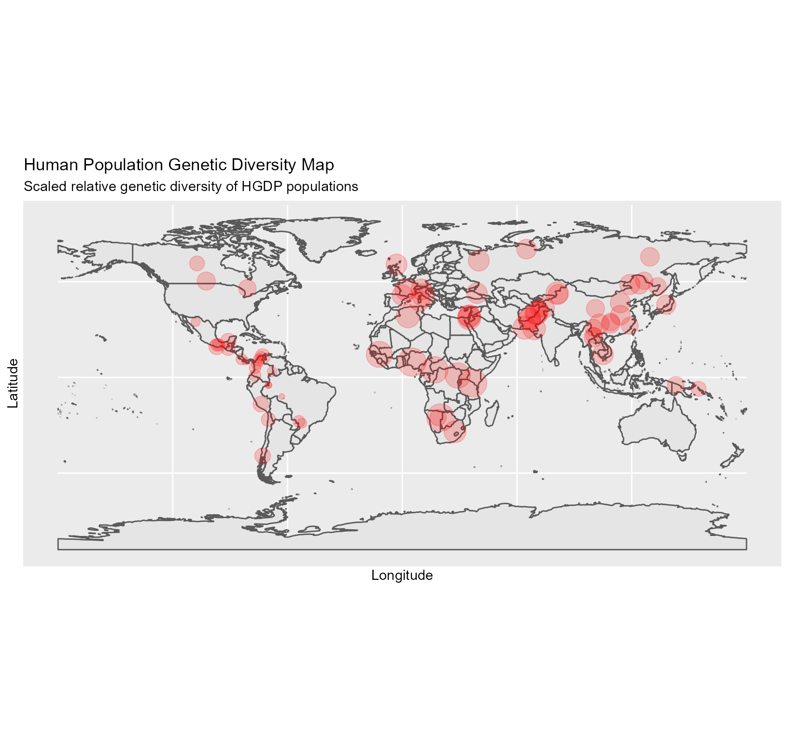
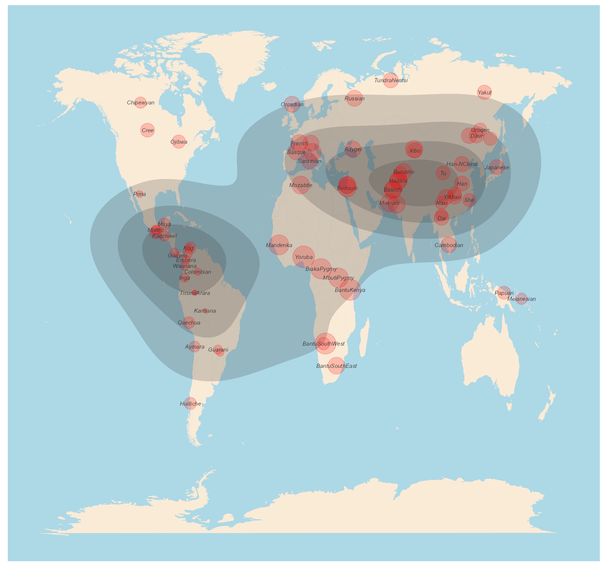
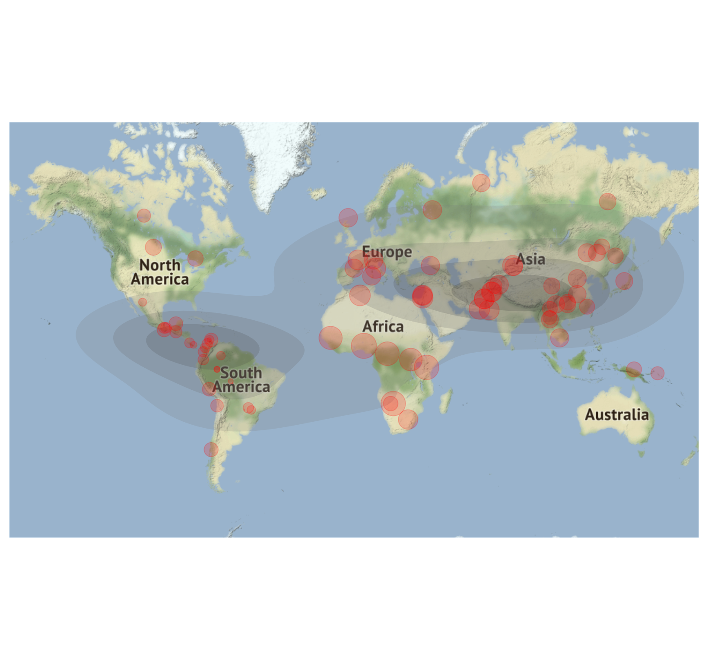

vignettes/introduction.Rmd
introduction.RmdThis vignette provides a step-by-step tutorial for visualizing the geo-genetic diversity profiles and the hierarchical structure of genetic diversity. In this tutorial, we will use the simulated microsatellite genotypes under a hierarchical island model to visualize the genetic diversity in the hierarchy. We then use the HDGP data to show the genetic diversity-density map.
The diversity profile, q^D , based on the Hill numbers (q=0, 1, 2), provides a complementary description of the variations in aggregates (Chao, A. et al, 2014; Gaggiotti, et al, 2018; Jost, L. et al, 2018; Sherwin, W. 2018). In the natural world, aggregates (populations and communities) are typically spatially-structured. Decomposing aggregates into global and local aggregates has allowed us to better understand its components in a hierarchy. For example, populations sampled from large spatial areas (i.e., continents) can be partitioned into several regions, sub-regions, populations, and sub-populations based on the nested structure of the metapopulations. Currently, packages explicitly used to visualize the hierarchical structure of diversities are still lacking. I present the “HierDmap” package here. The main function of this package is to intuitively visualize the diversity (species diversity and genetic diversity) in a hierarchy and plot the diversity profiles onto a geographic map.
We use two datasets to demonstrate the usefulness of this package. We first use simulated microsatellite genotypes with 16 populations nested in four regions to visualize the diversity in the hierarchy. The hierarchy of the structure can be formatted using “HierStr” function from “HierDpart” package (Qin, X, 2019). Besides, we use the Human Genome Diversity Project (HGDP) data (Cann HM,et al. 2002) to plot the genetic diversity onto a geographic map.
## or you can get the latest version of HierDpart from github
#if (!requireNamespace("devtools", quietly = TRUE))
# install.packages("devtools")
#if (!requireNamespace("circlepackeR", quietly = TRUE))
#devtools::install_github("jeromefroe/circlepackeR")
#if (!requireNamespace("HierDmap", quietly = TRUE))
#devtools::install_github("xinghuq/HierDmap")
#install_github("xinghuq/HierDmap")
library("HierDmap")
#> Registered S3 method overwritten by 'spdep':
#> method from
#> plot.mst ape
#> Registered S3 method overwritten by 'GGally':
#> method from
#> +.gg ggplot2
#> Registered S3 method overwritten by 'pegas':
#> method from
#> print.amova ade4
#> Warning: replacing previous import 'rgeos::union' by 'dplyr::union' when loading
#> 'HierDmap'
#> Warning: replacing previous import 'rgeos::intersect' by 'dplyr::intersect' when
#> loading 'HierDmap'
#> Warning: replacing previous import 'rgeos::setdiff' by 'dplyr::setdiff' when
#> loading 'HierDmap'We simulated microsatellite genotypes using fastsimcoal2 (Excoffier, L.& Foll, M, 2011). There are 16 populations with a total of 320 individuals nested in 4 regions. Each region has 7, 4, 2, 3 populations respectively. Therefore, we first calculate the genetic diversity and decompose it into three spatial levels: ecosystem, region, and local population level.
Calculating the genetic diversity can be achieved by “HierDq” function. The hierarchical structure is easilyinputted by specifying the arguments, " nreg = 4,r=c(7,4,2,3) ".
The commonly used diversity profile includes three diversity orders.q=0, indicates the richness, q=1, indicates Shannon diversity (exponential Shannon entropy), and q=2, indicates Simpson diversity (inverse Simpson index). Users can specify which diversity you want to calculate simply give the value of q in HierDq function.
library(HierDmap)
f <- system.file('extdata',package='HierDpart')
infile <- file.path(f, "Island.gen")
file = diveRsity::readGenepop(infile, gp=2, bootstrap = FALSE)
### calculate diversity of order q=1, number of regions, 4, each region has 7,4,2,3 populations.
HierDisland=HierDq(infile,q=1,ncode=3,nreg = 4,r=c(7,4,2,3))By now, using HierDq, we have calculated the genetic diversity at three spatial levels. The genetic diversity is calculated by locus. The overall diversity for each population is the median value of diversity across all loci.
Now, we plot the genetic diversity in the hierarchy. Circles indicate the populations or regions. The size of the circle represents the diversity values.
###Structure the diversity values
hie_mapdata=HierDstr(HierDisland)
### Plot the diversity
HierDplot(hie_mapdata,layout = 'circlepack')
#> Non-leaf weights ignored
Fig. 1. The hierarchy of diversity (q=1) values. The size of the circle represents the diversity value.
Now, we use the Human Genome Diversity Project (HGDP) data (Cann HM,et al. 2002) to show the spatial genetic diversity distributions across geography. The dataset consists of 1350 individuals from 79 populations genotyped at 678 microsatellite loci (Cann HM et al 2002). We first calculate the genetic diversity at each locus, and then estimate the diversity at three levels: globle, continent, subcontinent, populations (within country). Finally, we plot the human genetic diversity distribution and genetic-diversity-density across geographic locations.
## load dataset, genlind format
data(eHGDP)
### formating data, restructing the hierarchical data structure
levels(eHGDP$pop)=eHGDP$other$popInfo$Population
###struct a table with individual region/pop labels
popstr= eHGDP$other$popInfo[match(eHGDP$pop,eHGDP$other$popInfo$Population),]
popstr$Population=factor(popstr$Population,levels=unique(popstr$Population))
popstr$Region=factor(popstr$Region,levels=unique(popstr$Region))
#library(poppr)
#eHGDP1=missingno(eHGDP, type = "mean", quiet = FALSE, freq = FALSE)
eHGDP$tab=(adegenet::tab(eHGDP, freq = FALSE, NA.method = "mean"))
#HiereHGDPq0=HierDgenind(eHGDP,q=0,pop_region = popstr$Region,pop = popstr$Population)
### we calculate the diversity of order q=1
HiereHGDPq1=HierDgenind(eHGDP,q=1,pop_region = popstr$Region,pop = popstr$Population)
#HiereHGDPq2=HierDgenind(eHGDP,q=2,pop_region = popstr$Region,pop = popstr$Population)We first format the diversity values obtained from “HierDgenind” function using HierDstrp function. We then plot the the diversity hierarchy using HierDplot function.
###Structure the diversity values
a=HierDstrp(HiereHGDPq1)
### Plot the diversity
HierDplot(a,layout = 'circlepack')+ ggplot2::scale_fill_distiller(palette = "RdPu")
#> Non-leaf weights ignored
#> Scale for 'fill' is already present. Adding another scale for 'fill', which
#> will replace the existing scale.
Fig. 2. The genetic diversity (q=1) of HGDP data in the hierarchical structure. The size of the circle represents the diversity size.
###Structure the diversity values
a=HierDstrp(HiereHGDPq1)
### Plot the diversity
data(Dprofile)
PlothieD(Dprofile[,-1],size = "Dq1")Fig.3. The interactive plot of genetic diversity (q=1) across continents for HGDP data. The size of the circle represents the diversity value.
We plot the human genetic diversity distribution and genetic-diversity-density across geographic location based on the genetic diversity values calculated above. There are four methods for plotting the genetic diversity distributions. I demonstrate the four methods below. The dataset used to plot the geographic distribution should be formatted in a dataframe including the diversity values and the sample locations (longitude and latitude).
This method uses r graphics and rgeos to locate the diversity values to the map. Sometimes, the diversity values have the same magnitude, so we can not distinguish the size of the diversity. But we can scale the values between 0-10 and then plot the relative size. But this depends on your datasets.
##load data
data(Dprofile)
rDivgeomap(x=Dprofile$Longitude,y=Dprofile$Latitude,size=normalize(Dprofile$Dq1)*10) Fig. 4. Geo-diversity map of HGDP populations.
This method uses ggplot2.
##
data(Dprofile)
ggDivgeomap(data = Dprofile,x=Dprofile$Longitude, y= Dprofile$Latitude,scale = "medium", returnclass = "sf",size=normalize(Dprofile$Dq1)*10,title="Human Population Genetic Diversity Map",subtitle=("Scaled relative genetic diversity of HGDP populations")) Fig. 5. Geo-diversity map of HGDP populations.
This method uses ggplot2 to plot the geographic map. But this function also plots the density of the diversity values. We scale the values between 0-10 and then plot the relative size. The genetic diversity is estimated based on the relative values of the genetic diversity distributed across the space.
data(Dprofile)
dDivgeomap(Dprofile,x=Dprofile$Longitude, y=Dprofile$Latitude,label=Dprofile$Population,border_colour=NA, border_fill="antiquewhite",density_fill =Dprofile$Dq1 , density_alpha = I(.2),density_size = 1, bins = 5, geom = "polygon",point_color="red", pointalpha = .2, pointsize=normalize(Dprofile$Dq1)*10)
Fig. 6. Geo-diversity and diversity density map of HGDP populations.
This method uses ggmap and ggplpt2 to plot the geographic map and locate the diversity values on the map.
data(Dprofile)
dgDivgeomap(Dprofile,x=Dprofile$Longitude, y=Dprofile$Latitude,lon = c(-160, 160), lat = c(-60, 70), mapsource = "osm", mapcolor = "color", maptype="satellite",
point_color="red", pointalpha = .2, pointsize=normalize(Dprofile$Dq1)*10) Fig. 7. Geo-diversity and diversity density map of HGDP populations.
The above vignette summarizes and demonstrates the main functions of “HierDmap” package. Users can apply this package and adopt the methods for visualizing different values and hierarchies. This package will be much useful for metacommunity data, metapopulation data, and for geographic distribution/density of the target metric.
Chao, A., Chiu, C. H., & Jost, L. (2014). Unifying species diversity, phylogenetic diversity, functional diversity, and related similarity and differentiation measures through Hill numbers. Annual review of ecology, evolution, and systematics, 45, 297-324.
Gaggiotti, O. E., Chao, A., Peres‐Neto, P., Chiu, C. H., Edwards, C., Fortin, M. J., … & Selkoe, K. A. (2018). Diversity from genes to ecosystems: A unifying framework to study variation across biological metrics and scales. Evolutionary Applications, 11(7), 1176-1193.
Jost, L., Archer, F., Flanagan, S., Gaggiotti, O., Hoban, S., & Latch, E. (2018). Differentiation measures for conservation genetics. Evolutionary Applications, 11(7), 1139-1148.
Sherwin, W. B. (2018). Entropy, or information, unifies ecology and evolution and beyond. Entropy, 20(10), 727.
Cann HM, de Toma C, Cazes L, Legrand MF, Morel V, et al. (2002) A human genome diversity cell line panel. Science 296: 261-262.
Excoffier, L. and Foll, M (2011) fastsimcoal: a continuous-time coalescent simulator of genomic diversity under arbitrarily complex evolutionary scenarios Bioinformatics 27: 1332-1334.